#8783 Inherent Vice - Natürliche Mängel
Alternativ: Inherent Vice
Auszeichnungen: für 2 Oscars nominiert
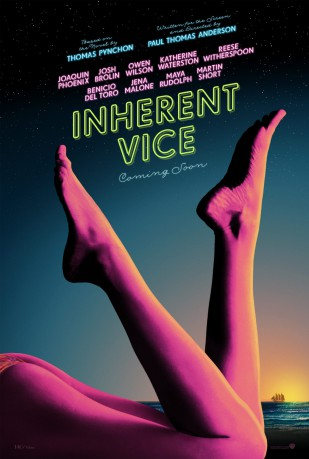 
 IMDB-Wertung: 6.7 / 10
IMDB-Wertung: 6.7 / 10  Metascore: 0
Metascore: 0 
During the psychedelic 60s and 70s Larry "Doc" Sportello is surprised by his former girlfriend and her plot for her billionaire boyfriend, his wife, and her boyfriend. A plan for kidnapping gets shaken up by the oddball characters entangled in this groovy kidnapping romp based upon the novel by Thomas Pynchon.
Jahr: 2014
Dauer: 148 Minuten
FSK: 16
Land: USA Studio: Warner Bros.Tonspuren: DD5.1 - ,
Untertitel:
Auflösung: 1080p (1920x1040) Größe: 10055 MB
Genre: Drama, Komödie, Krimi, Liebe, Mystery
Regisseur:  Paul Thomas Anderson
Paul Thomas Anderson
Drehbuch: Paul Thomas Anderson
Soundtrack: Jonny Greenwood
Darsteller:
- Joanna Newsom als Sortilège
- Katherine Waterston als Shasta Fay Hepworth
 Joaquin Phoenix als Larry Doc Sportello
Joaquin Phoenix als Larry Doc Sportello- Jordan Christian Hearn als Denis
- Jeannie Berlin als Aunt Reet
 Josh Brolin als Lt. Det. Christian F. Bigfoot Bjornsen
Josh Brolin als Lt. Det. Christian F. Bigfoot Bjornsen- 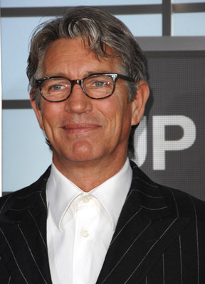 Eric Roberts als Michael Z. Wolfmann
- Serena Scott Thomas als Sloane Wolfmann
- 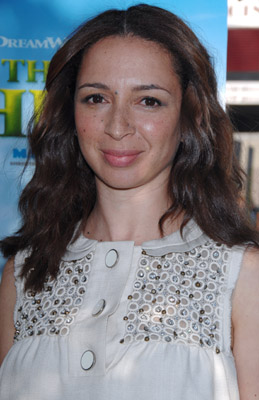 Maya Rudolph als Petunia Leeway
 Martin Dew als Dr. Buddy Tubeside
Martin Dew als Dr. Buddy Tubeside Michael Kenneth Williams als Tariq Khalil
Michael Kenneth Williams als Tariq Khalil- Hong Chau als Jade
- Shannon Collis als Bambi
- 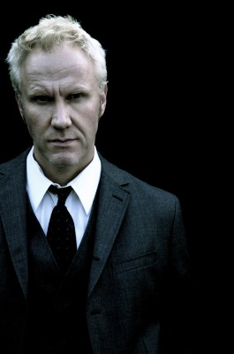 Christopher Allen Nelson als Glenn Charlock
 Benicio Del Toro als Sauncho Smilax, Esq
Benicio Del Toro als Sauncho Smilax, Esq- Catherine Haena Kim als News Reporter
 Jena Malone als Hope Harlingen
Jena Malone als Hope Harlingen Owen Wilson als Coy Harlingen
Owen Wilson als Coy Harlingen- Yvette Yates als Luz
- Joe Dioletto als Cop with Bigfoot
- 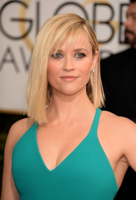 Reese Witherspoon als Deputy D.A. Penny Kimball
- 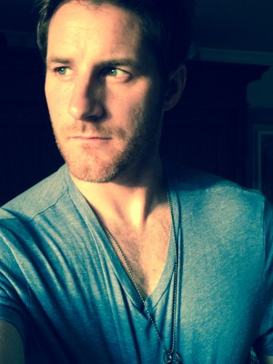 Sam Jaeger als Agent Flatweed
- 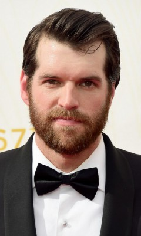 Timothy Simons als Agent Borderline
- Jack Kelly als Burke Stodger (archive footage)
 Jillian Bell als Chlorinda
Jillian Bell als Chlorinda- Christian Williams als Smedley
- Belladonna als Clancy Charlock
- Elaine Tan als Xandra
- 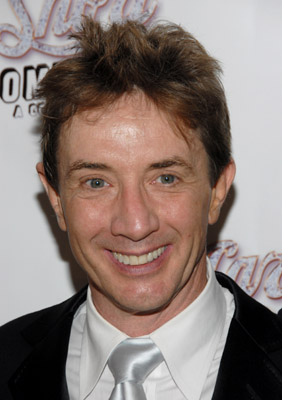 Martin Short als Dr. Rudy Blatnoyd, D.D.S.
- Sasha Pieterse als Japonica Fenway
- Wilson Bethel als LAPD Officer #1
- 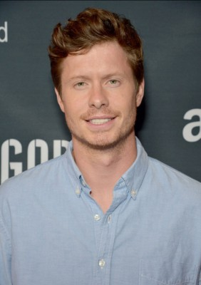 Anders Holm als LAPD Officer #2
 Jefferson Mays als Dr. Threeply
Jefferson Mays als Dr. Threeply- Eva Fisher als Dr. Threeply's Assistant #1
- Katie Schwartz als Kimberly
- Charley Morgan als Dr. Igor
 Keith Jardine als Puck Beaverton
Keith Jardine als Puck Beaverton- Delaina Mitchell als Mrs. Chastity Bjornsen
- Michael Cotter als Rhus Frothingham
 Peter McRobbie als Adrian Prussia
Peter McRobbie als Adrian Prussia- 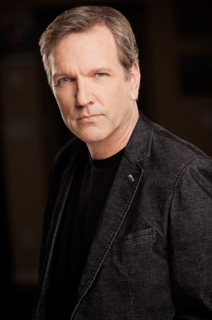 Martin Donovan als Crocker Fenway
- 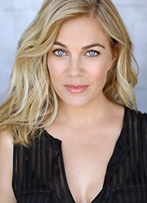 Samantha Lemole als Golden Fang Mother
- Madison Leisle als Golden Fang Daughter
- David Prak als Buddhist Monk
 Amy Ferguson als Bodhi
Amy Ferguson als Bodhi- Emma Dumont als Zinnia
- Ashleigh Biller als Patient (uncredited)
- Christina Bobrowsky als Patient (uncredited)
- Peter Bonilla als Police Officer (uncredited)
- Gregoer Boru als Recording Tech (uncredited)
Datei: X:\2014(G-M)\Inherent Vice - Natürliche Mängel (2014, FSK16, 1920x1040).mkv seit 30.04.2018
Festplatte: HD 2013(I-Z)-2014(A-Z)
 Es gibt insgesamt 136 Filme in der Gruppe '2014(G-M)'
Es gibt insgesamt 136 Filme in der Gruppe '2014(G-M)'